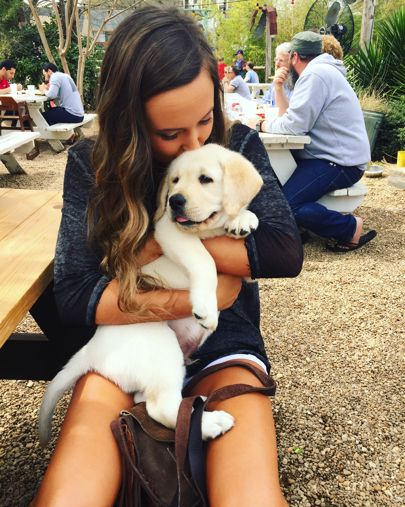

Labrador dogs are known to be some of the most loving, smart and friendly dogs in the world. They are also America's most popular breed as they work as a retriever for hunters,an assistant to the handicapped, a show competitor, a search and rescue dog, and many other things.Originally, labs were used for fishing and were bred to be the perfect water dogs. This is because they have water-resistant double coats that provide insulation that does not weigh them down when it gets wet. Another characteristic they have that helps them in the water is their webbed toes which allow for fast swimming. Not only are they fast swimmers, but fast runners as well.
Among their many great qualities, they are most commonly used for guide dog purposes. This is because they are easily trained and they have a strong desire to please. Another interesting fact about Labs is that because of their powerful noses, they have been trained to sniff out and identify early stages of cancer. They can actually learn to smell the disease by working with cancer cell samples. However, the dogs are very expensive to train and can only smell a certain amount of samples per day.
As seen in the pictures on the previous page, labs are very easy to get along with and socialize well with other dogs. Because they are extremely active, it is important they have a big backyard they can roam freely in. They shed seasonally and regular grooming is advised in order to keep their fur coats clean and water-resistant. Overall, labs are easy to take care of and portray the true definition of a "man's bestfriend".
